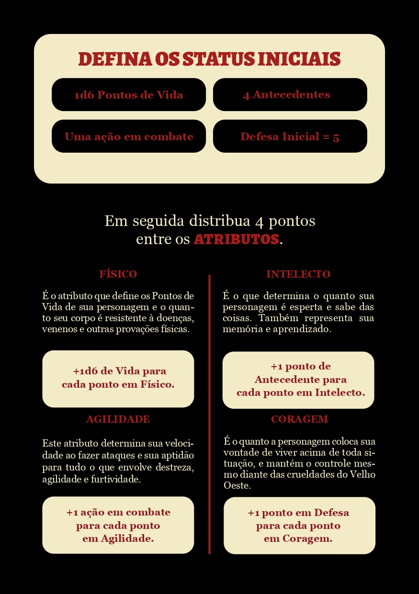
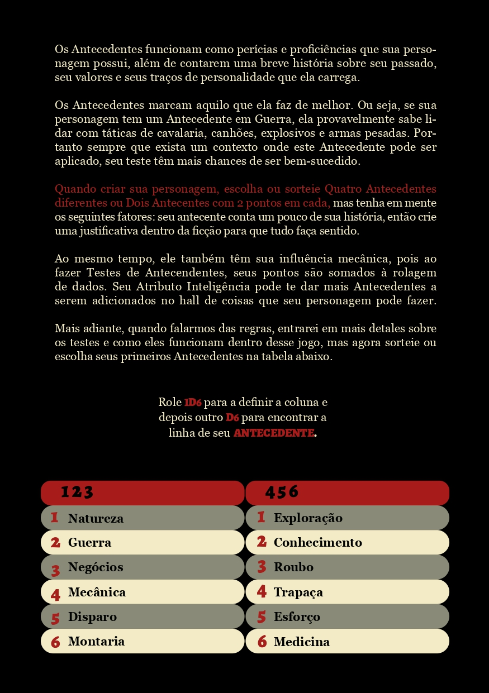
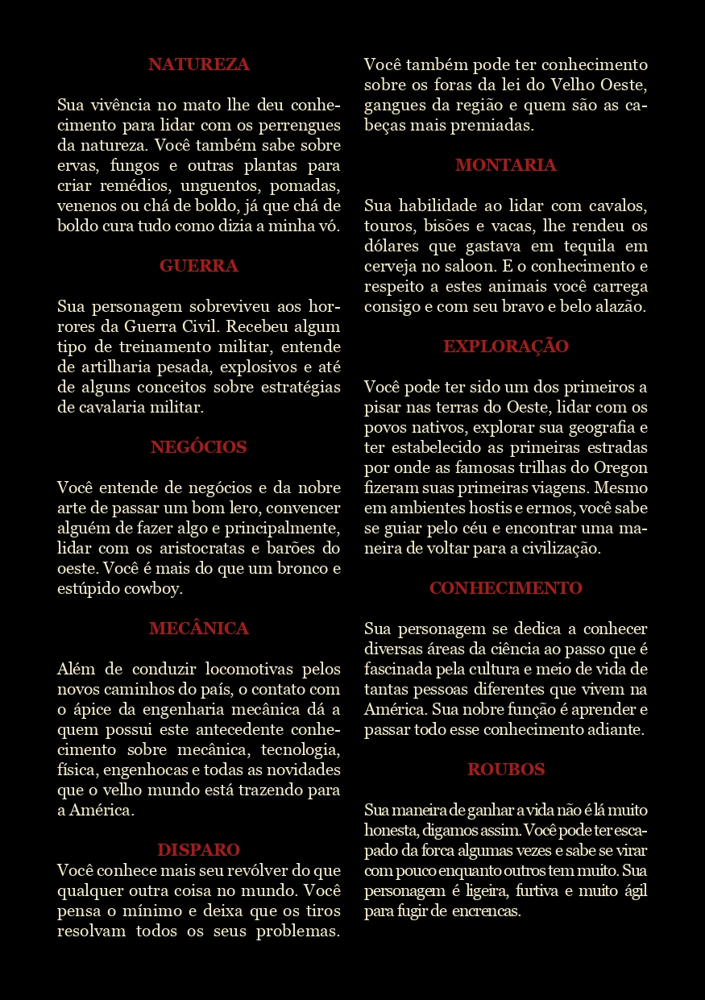
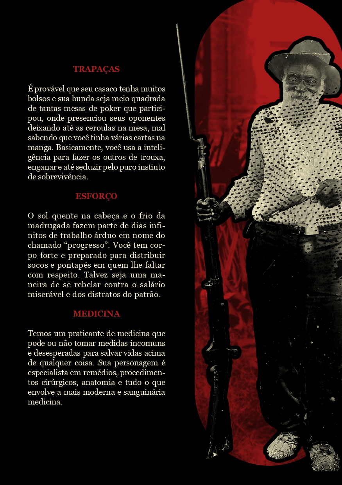

INICIAL
Como vai ser usado a base do Som das Seis
A gente vai usar a base quase que completa do Som das Seis, só que vamos obviamente modificar algumas coisas, para que nosso RPG não fique só baseado no que o Som das Seis nos proporciona. As mecânicas que eu também não vou saber bem como usar, vai tá no meu Discord
1 passo para criar seu personagem
Para criar seu personagem a gente vai usar a própia mecânica que o Som das Seis mostra, as Imagens a baixo vai mostrar o que você deve fazer. (você pode rodar o D6 lá no Discord na parte de Dados é so usar o comando (!1d6).
Distribua seus pontos
Após você distribuir seus pontos de Vida, e distribuir os pontos de atributos (lembrando de colocar os extras de cada atributo na ficha). Agora você vai colocar seus pontos de Antecedente na sua ficha.
(Lembrando se você botou os seus pontos de Atributos em Intelecto você ganha mais 1 ponto de Antecendente para cada ponto em Intelecto, então adicione caso não tenha feito) Abaixo vai tá a descrição de cada Antecedente e o que ele faz.
 